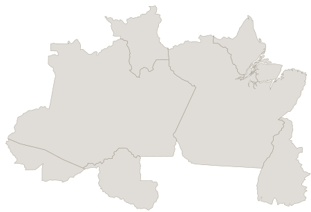
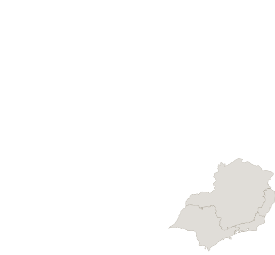

Lula vira e é reeleito: a primeira virada de turno da história democrática
Presidente e governadores nos 6 estados com 2º turno. Resultado final de 25 de outubro, compilado de veículos que citam o TSE. Dados reunidos em 26/10/2026.
← Resultados do 1º turno (04/10/2026)Resumo
Pela primeira vez desde a redemocratização, um candidato que terminou o 1º turno em segundo lugar venceu a eleição presidencial. Luiz Inácio Lula da Silva (PT) foi reeleito com 51,79% dos votos válidos (64.256.232 votos), contra 48,21% de Flávio Bolsonaro (PL), que recebeu 59.826.041 votos. A margem de 4,43 milhões de votos reverteu uma desvantagem de 2,2 milhões que o petista tinha após o primeiro turno.
A virada se construiu em duas frentes. No Nordeste, reduto lulista, a vantagem regional saltou de 11,1 milhões para 13,65 milhões de votos entre os dois turnos. Em Minas Gerais, único estado a trocar de lado, Lula transformou uma desvantagem de 5,4 pontos em uma vitória apertada de 0,86 ponto, com 50,43% contra 49,57%.
A queda na abstenção foi decisiva. O comparecimento subiu de 125,2 milhões para 128,2 milhões de eleitores, e os votos brancos e nulos caíram 30%. Com o menor índice de ausências desde 2006 (19,22%), quase três milhões de brasileiros a mais foram às urnas no segundo turno.

Lula

Flávio Bolsonaro
O mapa do 2º turno
Lula venceu em 13 estados: os nove do Nordeste, mais Amazonas, Pará, Amapá e Minas Gerais. Flávio Bolsonaro foi maioria em 14 unidades da federação: todos os estados do Sul, Centro-Oeste e Distrito Federal, além de quatro do Norte (RR, RO, AC, TO) e três do Sudeste (SP, RJ, ES). A disputa mais apertada foi em Minas Gerais, onde Lula virou com 50,43%, único estado a trocar de lado entre os turnos.
| UF | Vencedor | % |
|---|
O voto no exterior
Quase 1 milhão de brasileiros residentes no exterior votaram para presidente. Lula venceu no agregado com 53,86% dos votos, liderando em 62 países. Flávio venceu em 39, com destaque para EUA, Japão e Israel.
Destaques por país
| País/Região | Lula % | Flávio % | Vencedor |
|---|---|---|---|
| Portugal | 74,98% | 25,02% | Lula |
| Coreia do Sul | 64,35% | 35,65% | Lula |
| Bélgica/Luxemburgo | 58,72% | 41,28% | Lula |
| Estados Unidos | 37,35% | 62,65% | Flávio |
| Japão | 19,92% | 80,08% | Flávio |
| Israel | 19,19% | 80,81% | Flávio |
No exterior, eleitores votam apenas para presidente. Flávio dominou nos EUA (62,65%), Japão (80,08%) e Israel (80,81%). Lula liderou na Europa e na maioria dos países da América Latina.
Do 1º ao 2º turno: como Lula reverteu 2,2 milhões de votos
No primeiro turno, Flávio Bolsonaro liderou com 47,03% dos votos válidos (56.104.503 votos) contra 45,15% de Lula (53.846.396 votos), uma vantagem de 2,26 milhões. Três semanas depois, Lula somou 64.256.232 votos (51,79%), um salto de 10,4 milhões. Flávio cresceu 3,72 milhões, chegando a 59.826.041 (48,21%). A margem se inverteu para 4,43 milhões a favor do petista.
O Nordeste foi o motor da virada. A vantagem regional de Lula saltou de 11,1 milhões para 13,65 milhões de votos. No mapa, os 13 estados que Lula venceu são os mesmos que deram a vitória ao PT em 2022, com uma troca: em 2026, Lula perdeu Tocantins mas conquistou o Amapá.

Norte
Nordeste
Centro-Oeste

Sudeste
Sul
Para onde foram os votos: a aritmética da virada
Entre o 1º e o 2º turno, 14,1 milhões de votos válidos foram redistribuídos. Eles vieram de duas fontes: os 9,06 milhões de eleitores que votaram em candidatos eliminados (Cury, Renan, Caiado e Zema) e os 4,8 milhões de votos válidos adicionais gerados pelo aumento do comparecimento e pela queda nos brancos e nulos. A forma como esses votos se dividiram explica a virada.
Os candidatos eliminados e seus apoios
| Candidato | Partido | Votos no 1T | % | Apoio no 2T |
|---|---|---|---|---|
| Augusto Cury | Avante | 3.448.569 | 2,89% | Apoiou Flávio (08/10) |
| Renan Santos | Missão | 2.675.887 | 2,24% | Neutro (não votou no 2T) |
| Ronaldo Caiado | PSD | 2.605.148 | 2,18% | Apoiou Flávio |
| Romeu Zema | Novo | 326.488 | 0,27% | Apoiou Flávio |
| Total disponível | 9.056.092 | 7,58% | ||
O cálculo da redistribuição
Lula ganhou 10,39 milhões de votos entre os turnos. Flávio ganhou 3,72 milhões. Somando as duas fontes, votos de candidatos eliminados (9,06M) e novos votos válidos (4,8M), havia aproximadamente 13,9 milhões em disputa.
Três dos quatro candidatos eliminados declararam apoio a Flávio: Cury formalizou em 08/10 após assinar termo de compromisso com oito propostas; Caiado e Zema aderiram nos dias 5 e 6. Renan Santos (2,68M votos) foi o único a se manter neutro, declarando que não votaria no 2T e que apoiar qualquer lado "comprometeria a construção de um campo próprio". Dos 9,06 milhões de votos dos eliminados, 6,38 milhões tinham direcionamento formal para Flávio. Mesmo assim, ele cresceu apenas 3,72 milhões entre os turnos. Ou seja, mesmo entre os eleitores de candidatos que apoiaram Flávio, a maioria não migrou para ele. Somados aos quase 3 milhões de novos eleitores que compareceram no 2T e à redução dos votos brancos e nulos, Lula construiu uma onda de 10,4 milhões de votos adicionais que reverteu a vantagem de Flávio.
Crescimento de Lula por estado
Lula cresceu em todos os 27 estados e no DF entre o 1º e o 2º turno. O maior avanço em pontos percentuais foi em Goiás (+9,29 pp), onde Caiado tinha forte presença no 1T. Em números absolutos, São Paulo gerou o maior ganho: +2,61 milhões de votos.
| UF | Lula 1T | Lula 2T | Δ Lula | Flávio 1T | Flávio 2T | Δ Flávio |
|---|
O avanço nos municípios
Principais cidades e capitais
Lula virou em duas capitais: Rio de Janeiro e Macapá. Cresceu em todas as capitais do país, incluindo redutos adversários. Em BH, ficou a 0,80 ponto de virar.
| Cidade | UF | Lula 1T | Lula 2T | Δ Lula | Flávio 1T | Flávio 2T | Δ Flávio | Resultado |
|---|
Lula cresceu em todos os 399 municípios do Paraná entre os turnos, subindo de 31,20% para 37,42%. Na região Centro-Oeste, conquistou 44% mais cidades; no Sul, 42% mais.
A mobilização que decidiu a eleição
O segundo turno registrou a menor abstenção desde 2006: 19,22% dos eleitores aptos não compareceram, contra 21,08% do primeiro turno. Quase três milhões de brasileiros a mais foram às urnas, elevando o comparecimento de 125,2 milhões para 128,2 milhões.
Os votos brancos e nulos também caíram. Juntos, somaram 4.153.791, uma queda de 30% em relação ao primeiro turno. Com mais gente votando e menos votos desperdiçados, o universo de votos válidos cresceu 4,78 milhões. A forma como esses votos se distribuíram, massivamente para Lula no Nordeste e entre os novos eleitores, foi o fator decisivo.
O perfil do voto
Atenção: estes dados são de pesquisa eleitoral, não do resultado das urnas. No Brasil, o voto é secreto e a urna eletrônica não registra dados demográficos. Recortes por gênero, idade, escolaridade e renda só existem via pesquisas amostrais.
Pesquisa DataTrends/Poder360 de outubro de 2026 (2.000 entrevistados, margem de erro de ±2,19 pp, nível de confiança de 95%, coleta por telefone automatizado entre 7 e 9/10) mostra como a intenção de voto se dividiu por perfil. Lula teve vantagem entre idosos e eleitores de menor escolaridade. Flávio dominou entre jovens, homens e eleitores com ensino superior. Os percentuais não somam 100% porque incluem brancos, nulos e indecisos.
Por gênero
Homens
Mulheres
Por faixa etária
| Faixa | Lula | Flávio | Vantagem |
|---|---|---|---|
| 16 a 24 anos | 30,9% | 60,2% | Flávio +29,3 |
| 25 a 34 anos | 38,9% | 51,5% | Flávio +12,6 |
| 35 a 44 anos | 44,7% | 48,2% | Flávio +3,5 |
| 45 a 59 anos | 45,7% | 49,8% | Flávio +4,1 |
| 60+ anos | 51,0% | 43,2% | Lula +7,8 |
Flávio dominou entre jovens de 16 a 24 anos com quase 30 pontos de vantagem. Lula só liderou entre eleitores acima de 60 anos.
Por escolaridade
| Escolaridade | Lula | Flávio |
|---|---|---|
| Analfabeto / Lê e escreve | 47,9% | 45,8% |
| Até Ensino Fundamental | 50,2% | 45,1% |
| Até Ensino Médio | 43,9% | 49,1% |
| Ensino Superior ou mais | 30,4% | 60,0% |
Por renda
| Faixa de renda | Lula | Flávio |
|---|---|---|
| Até 2 salários mínimos | 47,3% | 47,8% |
| De 2 a 5 salários mínimos | 42,2% | 51,2% |
| Acima de 5 salários mínimos | 37,4% | 50,9% |
Fonte: DataTrends/Poder360, 2.000 entrevistados, 7 a 9/10/2026, margem ±2,19 pp, confiança 95%. Registro TSE. Entrevistas telefônicas automatizadas (URA), ponderadas por UF, sexo, idade, escolaridade e renda.
2022 vs 2026: duas eleições, dois Bolsonaros
Em 2022, Lula derrotou Jair Bolsonaro com a menor margem da história: 1,8 ponto percentual (2,1 milhões de votos). Em 2026, contra Flávio Bolsonaro, a margem foi de 3,58 pontos (4,43 milhões), mas a virada do 1T para o 2T foi inédita.
| 2022 (2T) | 2026 (2T) | Diferença | |
|---|---|---|---|
| Lula (% votos válidos) | 50,90% | 51,79% | +0,89 pp |
| Bolsonaro / Flávio (%) | 49,10% | 48,21% | -0,89 pp |
| Margem (votos) | ~2,1 milhões | ~4,43 milhões | +2,33M |
| Margem (pp) | 1,80 pp | 3,58 pp | +1,78 pp |
| Lula venceu em | 13 estados | 13 estados | 0 |
| Adversário venceu em | 14 UFs | 14 UFs | 0 |
| Abstenção (2T) | 20,56% | 19,22% | -1,34 pp |
| Virada entre turnos? | Não (Lula liderou os 2) | Sim (inédita) | 1ª vez |
Mesmos 13 estados, mapa diferente. Lula manteve os 9 do Nordeste + AM, PA e MG em ambas as eleições. A troca: em 2022 venceu em TO, em 2026 perdeu TO mas ganhou AP.
Seis governadores definidos no 2º turno
Cinco estados e o Distrito Federal definiram seus governadores no segundo turno. O PP foi o grande vencedor da etapa final, saindo de dois para quatro governos com as vitórias de Mailza Assis no Acre e Celina Leão no DF. No Rio Grande do Norte, Cadu de Lula (PT) venceu com a menor margem entre todas as disputas: apenas 32.625 votos de diferença, ou 1,54 ponto percentual.
| UF | Eleito | Partido | % | Votos | Derrotado | Partido | % | Votos |
|---|
Governadores por partido
Com os resultados do 2º turno, oito partidos comandam os 27 governos estaduais. O PL lidera com seis governadores, seguido por PSD (5), PP (4), PT (4) e Republicanos (4).
Mapa final: os 27 governadores
Após os dois turnos, oito partidos comandam os governos estaduais. O PL lidera com 6 governadores, seguido por PSD (5), PP (4), PT (4) e Republicanos (4).
21 dias que viraram a eleição
Entre o 1º turno (4 de outubro) e o 2º turno (25 de outubro), uma sequência de movimentos políticos, debates, pesquisas e medidas de governo redefiniu a corrida presidencial. Clique em cada evento para ler os detalhes.
A contestação e a questão jurídica
Horas após a confirmação do resultado, Flávio Bolsonaro anunciou que pediria a anulação das eleições. O argumento central: a prorrogação de duas horas determinada pelo ministro Cristiano Zanin (STF) teria violado a isonomia eleitoral, já que centenas de seções já haviam encerrado e lacrado as urnas quando a decisão foi proferida.
Os argumentos da contestação
Flávio e PL alegam:
- Zanin, ex-advogado de Lula, não deveria decidir sobre a eleição do ex-cliente
- Urnas lacradas não foram reabertas, quebrando isonomia entre eleitores
- Decisão do STF "atropelou" o TSE sem consulta prévia
- Fiscais do PL teriam sido removidos de salas-cofre (sem provas apresentadas)
TSE e especialistas respondem:
- O presidente do TSE declarou ter "absoluta certeza de todo o processo eleitoral"
- A extensão parcial não causou distorções significativas no resultado final
- A margem de 4,43 milhões de votos torna improvável que 2h extras tenham decidido
- Juristas apontam que o pedido de anulação carece de amparo no Código Eleitoral
Até o fechamento deste relatório (26/10/2026), o pedido formal de anulação ainda não havia sido protocolado no TSE.
O que vem pela frente
Lula inicia seu quarto mandato em janeiro de 2027 diante de um cenário complexo: um Congresso com maioria conservadora, dívida pública em 82,9% do PIB, quatro vagas para indicar ao STF e sanções econômicas dos EUA.
Economia
Congresso
Judiciário
Relações exteriores
Calendário pós-eleição
| Data | Evento |
|---|---|
| 25/10/2026 | 2º turno: Lula reeleito presidente |
| 26/10/2026 | Início da transição de governo |
| 18/12/2026 | Diplomação dos eleitos pela Justiça Eleitoral |
| 05/01/2027 | Posse do presidente e vice-presidente no Congresso Nacional |
| 06/01/2027 | Posse dos governadores nas Assembleias Legislativas |
| 01/02/2027 | Posse de senadores e deputados federais |
| 01/02/2027 | Posse de deputados estaduais e distritais |
As datas de posse seguem a Emenda Constitucional nº 111, que alterou o calendário tradicional de 1º de janeiro.
Ressalvas
Este relatório compila dados de veículos que citam o TSE.
- Percentuais são de votos válidos (excluindo brancos e nulos), salvo indicação contrária.
- Arredondamentos podem gerar diferenças de ±0,1 p.p. entre fontes.
- Dados de abstenção, brancos e nulos referem-se ao total de eleitores aptos.
- Votos absolutos de Tocantins são aproximados (~545 mil e ~301 mil).
- Para os resultados do 1º turno, consulte a página do 1º turno.
Fontes
Dados compilados a partir de:
- TRE-SP: resultado do 2º turno
- CNN Brasil: resultados por estado
- Gazeta do Povo: mapa do 2º turno
- Jovem Pan: governadores eleitos
- Metrópoles: estados por candidato
- InfoMoney: resultado nos estados
- Forbes: governadores do 2º turno
- Wikipedia: 2026 Brazilian general election
- O Tempo: mapa dos votos
- Revista Oeste: números finais
- Agência Brasil: governadores por partido
- O Povo: motivos da virada